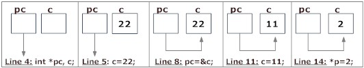

Pointers are powerful features of C and (C++) programming that differentiates it from other popular programming languages like: Java and Python.
Pointers are used in C program to access the memory and manipulate the address.
Address in C
Before you get into the concept of pointers, let's first get familiar with address in C.
If you have a variable var in your program, &var will give you its address in the memory, where & is commonly called the reference operator.
You must have seen this notation while using scanf() function. It was used in the function to store the user inputted value in the address of var.
scanf("%d", &var);
/* Example to demonstrate use of reference operator in C programming. */
#include <stdio.h>
int main()
{
int var = 5;
printf("Value: %d\n", var);
printf("Address: %u", &var); //Notice, the ampersand(&) before var.
return 0;
}Output
Value: 5 Address: 2686778
Note: You may obtain different value of address while using this code.
In above source code, value 5 is stored in the memory location 2686778. var is just the name given to that location.
Pointer variables
In C, there is a special variable that stores just the address of another variable. It is called Pointer variable or, simply, a pointer.
Declaration of Pointer
data_type* pointer_variable_name; int* p;
Above statement defines, p as pointer variable of type int.
Reference operator (&) and Dereference operator (*)
As discussed, & is called reference operator. It gives you the address of a variable.
Likewise, there is another operator that gets you the value from the address, it is called a dereference operator (*).
Below example clearly demonstrates the use of pointers, reference operator and dereference operator.
Note: The * sign when declaring a pointer is not a dereference operator. It is just a similar notation that creates a pointer.
Example To Demonstrate Working of Pointers
/* Source code to demonstrate, handling of pointers in C program */
#include <stdio.h>
int main(){
int* pc;
int c;
c=22;
printf("Address of c:%u\n",&c);
printf("Value of c:%d\n\n",c);
pc=&c;
printf("Address of pointer pc:%u\n",pc);
printf("Content of pointer pc:%d\n\n",*pc);
c=11;
printf("Address of pointer pc:%u\n",pc);
printf("Content of pointer pc:%d\n\n",*pc);
*pc=2;
printf("Address of c:%u\n",&c);
printf("Value of c:%d\n\n",c);
return 0;
}
Output
Address of c: 2686784 Value of c: 22 Address of pointer pc: 2686784 Content of pointer pc: 22 Address of pointer pc: 2686784 Content of pointer pc: 11 Address of c: 2686784 Value of c: 2

Explanation of program and figure
int* pc;creates a pointer pc andint c;creates a normal variable c.
Since pc and c are both not initialized, pointer pc points to either no address or a random address. Likewise, variable c is assigned an address but contains a random/garbage value.c=22;assigns 22 to the variable c, i.e.,22 is stored in the memory location of variable c.
Note that, when printing&c(address of c), we use %u rather than %d since address is usually expressed as an unsigned integer (always positive).pc=&c;assigns the address of variable to c to the pointer pc.
When printing, you see value of pc is the same as the address of c and the content of pc (*pc) is 22 as well.c=11;assigns 11 to variable c.
We assign a new value to c to see its effect on pointer pc.- Since, pointer pc points to the same address as c, value pointed by pointer pc is 11 as well.
Printing the address and content of pc shows the updated content as 11. *pc=2;changes the contents of the memory location pointed by pointer pc to 2.
Since the address of pointer pc is same as address of c, value of c also changes to 2.
Common mistakes when working with pointers
Suppose, you want pointer pc to point to the address of c. Then,
int c, *pc;
// Wrong! pc is address whereas, c is not an address.
pc = c;
// Wrong! *pc is the value pointed by address whereas, %amp;c is an address.
*pc = &c;
// Correct! pc is an address and, %amp;pc is also an address.
pc = &c;
// Correct! *pc is the value pointed by address and, c is also a value.
*pc = c;In both cases, pointer pc is not pointing to the address of c.